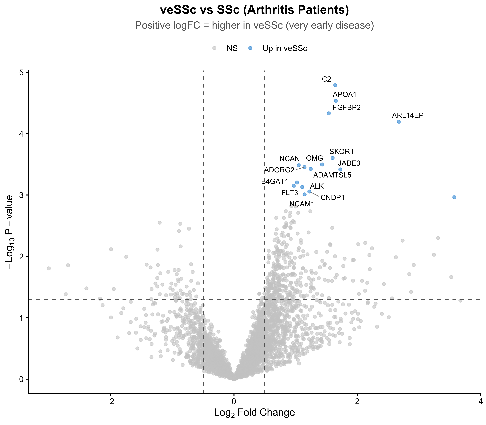

PreSSc Arthritis versus SSc Arthritis
Analysis Script
2026-07-09
Last updated: 2026-07-09
Checks: 7 0
Knit directory: RESOLVE_SerumProteomics/
This reproducible R Markdown analysis was created with workflowr (version 1.7.2). The Checks tab describes the reproducibility checks that were applied when the results were created. The Past versions tab lists the development history.
Great! Since the R Markdown file has been committed to the Git repository, you know the exact version of the code that produced these results.
Great job! The global environment was empty. Objects defined in the global environment can affect the analysis in your R Markdown file in unknown ways. For reproduciblity it’s best to always run the code in an empty environment.
The command set.seed(20250204) was run prior to running
the code in the R Markdown file. Setting a seed ensures that any results
that rely on randomness, e.g. subsampling or permutations, are
reproducible.
Great job! Recording the operating system, R version, and package versions is critical for reproducibility.
Nice! There were no cached chunks for this analysis, so you can be confident that you successfully produced the results during this run.
Great job! Using relative paths to the files within your workflowr project makes it easier to run your code on other machines.
Great! You are using Git for version control. Tracking code development and connecting the code version to the results is critical for reproducibility.
The results in this page were generated with repository version f6e4eaf. See the Past versions tab to see a history of the changes made to the R Markdown and HTML files.
Note that you need to be careful to ensure that all relevant files for
the analysis have been committed to Git prior to generating the results
(you can use wflow_publish or
wflow_git_commit). workflowr only checks the R Markdown
file, but you know if there are other scripts or data files that it
depends on. Below is the status of the Git repository when the results
were generated:
Ignored files:
Ignored: .DS_Store
Ignored: .Rhistory
Ignored: .Rproj.user/
Ignored: Screenshot-2024-08-22-at-11.31.50_files/
Ignored: analysis/.DS_Store
Ignored: data/.DS_Store
Ignored: output/.DS_Store
Ignored: output/3.1_veSSc_Athritis /
Ignored: output/3.2_veSScarthritis_vs_SScarthritis /
Ignored: output/3.2_veSScarthritis_vs_SScarthritis/
Ignored: output/Analysis_Cosimo/
Ignored: output/SSc Proteomics: Pathway Enrichment Analysis/
Untracked files:
Untracked: MRSS_delta_correlations.png
Untracked: analysis/OLD/
Untracked: analysis/RESOLVE_SSc_Pathway_Enrichment-2.Rmd
Untracked: analysis/SSc_ILD_Onset_Analysis_Clean.Rmd
Untracked: analysis/SSc_ILD_Onset_Pathway_Enrichment.Rmd
Untracked: analysis/output/
Untracked: code/11102024_PreliminaryLook_Preprocessing.Rmd
Untracked: code/14102024_MetaData.csv
Untracked: code/Final_FinalList_ArthritisControls_2024.08.15.xlsx
Untracked: data/ASTRID_ILDonset_PROTEOMIC_CB3groups.xlsx
Untracked: data/ASTRID_ILDonset_PROTEOMIC_COSIMO.xlsx
Untracked: data/Metadata_veSSC.xlsx
Untracked: data/Metadata_veSSC_vs_SSc_arthritis_final.xlsx
Untracked: data/P2024-199-OLI_80_NPX_2024-10-10.parquet
Untracked: data/PEA/
Untracked: data/PRECISE_Pietro.xlsx
Untracked: data/metadata.xlsx
Untracked: output/ILD_Onset_Analysis/
Untracked: output/Pietro_InterferonScore/
Untracked: output/PreSScArthritis_vs_SScArthritis/
Untracked: output/PreSSc_Synovitis/
Untracked: output/RESOLVE/
Untracked: output/RESOLVE_clean/
Untracked: output/SSc_Olink_Analysis_Clean-2/
Untracked: output/SSc_Skin_Regression_Analysis/
Untracked: output/SSc_veSSc_vs_SSc_Arthritis_Analysis_Clean/
Untracked: output/UpdatedAnalysisPipelineCosimo/
Untracked: output/arthritis_analysis/
Untracked: site_libs/
Unstaged changes:
Modified: .Rprofile
Modified: .gitattributes
Modified: .gitignore
Modified: README.md
Modified: RESOLVE_SerumProteomics.Rproj
Modified: _workflowr.yml
Deleted: analysis/PreSSc/PreSScArthritis_vs_SScArthritis.Rmd
Modified: analysis/about.Rmd
Modified: analysis/license.Rmd
Modified: code/README.md
Modified: data/README.md
Modified: output/README.md
Note that any generated files, e.g. HTML, png, CSS, etc., are not included in this status report because it is ok for generated content to have uncommitted changes.
These are the previous versions of the repository in which changes were
made to the R Markdown
(analysis/PreSScArthritis_vs_SScArthritis.Rmd) and HTML
(docs/PreSScArthritis_vs_SScArthritis.html) files. If
you’ve configured a remote Git repository (see
?wflow_git_remote), click on the hyperlinks in the table
below to view the files as they were in that past version.
| File | Version | Author | Date | Message |
|---|---|---|---|---|
| Rmd | f6e4eaf | astridhofman7 | 2026-07-09 | Update index and analyses |
| html | dbbec71 | astridhofman7 | 2026-07-09 | Build site. |
| html | 946e31d | astridhofman7 | 2026-07-09 | Build site. |
| html | 6dd28bb | astridhofman7 | 2026-07-09 | Build site. |
| html | 390ed55 | astridhofman7 | 2026-07-09 | Build site. |
| html | 0310e62 | astridhofman7 | 2026-07-09 | Build site. |
| html | 7c20ceb | astridhofman7 | 2026-07-09 | Build site. |
| html | 42f73a6 | astridhofman7 | 2026-07-09 | Build site. |
| Rmd | b41b521 | astridhofman7 | 2026-07-09 | updates |
| html | 0564f49 | astridhofman7 | 2026-07-09 | Build site. |
| Rmd | 9964543 | astridhofman7 | 2026-07-09 | updates |
Overview
Binary comparison of serum Olink proteomics between veSSc (very early SSc) and SSc (established SSc) patients with arthritis, adjusting for immunosuppression status.
Analysis: - Binary limma: Diagnosis (veSSc vs SSc) + Immunosuppression covariate - Filter for AveExpr > 0, recalculate FDR - Volcano plot and boxplots for significant hits
Interpretation: - Positive logFC = higher in veSSc - Negative logFC = higher in SSc (established disease)
1. Libraries
# =============================================================================
# REQUIRED PACKAGES
# =============================================================================
library(arrow) # Read parquet files
library(readxl) # Read Excel metadata
library(here) # Project-relative paths
library(dplyr) # Data manipulation
library(tidyr) # Reshaping data
library(tibble) # rownames_to_column
library(limma) # Differential expression analysis
library(ggplot2) # Plotting
library(ggpubr) # stat_compare_means
library(cowplot) # Combine plots
library(ggrepel) # Label repelling for volcano2. Setup Output Directory
# =============================================================================
# PURPOSE: Create output directory for results
# =============================================================================
# Get script name (without .Rmd extension) for output folder
script_name <- "PreSScArthritis_vs_SScArthritis" # Or set manually
# Create output directory: output/<script_name>/
output_dir <- here::here("output", script_name)
if (!dir.exists(output_dir)) dir.create(output_dir, recursive = TRUE)
cat("Output directory:", output_dir, "\n")Output directory: /Users/astrid/Desktop/PhD/RESOLVE_SerumProteomics/output/PreSScArthritis_vs_SScArthritis 3. Color Palettes
# =============================================================================
# PURPOSE: Define consistent color schemes
# =============================================================================
colours_class <- c(
"veSSc" = "#3498DB", # Blue - very early SSc
"SSc" = "#E74C3C" # Red - established SSc
)4. Load Data
# =============================================================================
# PURPOSE: Load Olink NPX data and clinical metadata
#
# DATA SOURCES:
# - Olink: NPX values (normalized protein expression)
# - Metadata: Clinical variables including Diagnosis (veSSc vs SSc)
# =============================================================================
# Load Olink data
olink <- read_parquet(here::here("data","P2024-199-OLI_80_NPX_2024-10-10.parquet"))
# Load metadata (sheet 2)
metadata <- read_excel(here::here("data","Metadata_veSSC_vs_SSc_arthritis_final.xlsx"), sheet = 2)
cat("Olink samples:", length(unique(olink$SampleID)), "\n")Olink samples: 95 cat("Metadata samples:", nrow(metadata), "\n")Metadata samples: 18 5. Data Preparation
# =============================================================================
# PURPOSE: Prepare and merge data
#
# STEPS:
# 1. Create matching patient IDs
# 2. Filter for patients with Diagnosis data
# 3. Merge Olink with metadata
# =============================================================================
# Create matching IDs (trim whitespace, lowercase)
metadata$patient <- trimws(tolower(metadata$Barcode))
olink$patient <- trimws(tolower(olink$SampleID))
# Merge Olink with metadata
merged <- merge(olink, metadata, by = "patient", all.x = TRUE)
# Filter for patients with Diagnosis data (exclude controls)
filtered_df <- merged %>%
filter(!is.na(Diagnosis))
# Ensure Diagnosis is a factor with proper labels
# Assuming 0 = veSSc, 1 = SSc (check your data!)
filtered_df$Diagnosis <- factor(filtered_df$Diagnosis,
levels = c("veSSc", "SSc"))
cat("Patients with diagnosis data:", length(unique(filtered_df$patient)), "\n")Patients with diagnosis data: 18 cat("\nDiagnosis breakdown:\n")
Diagnosis breakdown:print(table(filtered_df$Diagnosis[!duplicated(filtered_df$patient)]))
veSSc SSc
9 9 6. Create Expression Matrix
# =============================================================================
# PURPOSE: Create protein expression matrix for limma
#
# WHY: limma needs a matrix with:
# - Rows = proteins (OlinkID)
# - Columns = samples (patients)
# - Values = NPX (expression)
# =============================================================================
# Create wide matrix
matrix_data <- filtered_df %>%
dplyr::select(patient, OlinkID, NPX) %>%
distinct() %>%
pivot_wider(names_from = patient, values_from = NPX)
# Convert to matrix
data_matrix <- as.data.frame(matrix_data)
rownames(data_matrix) <- data_matrix$OlinkID
data_matrix <- data_matrix[, -1] # Remove OlinkID column
data_matrix <- as.matrix(data_matrix)
# Convert to numeric
data_matrix2 <- apply(data_matrix, 2, as.numeric)
rownames(data_matrix2) <- rownames(data_matrix)
# Remove control samples (keep only patient samples)
keep_samples <- !grepl("neg|sample|plate|control", colnames(data_matrix2), ignore.case = TRUE)
data_matrix2 <- data_matrix2[, keep_samples]
cat("Expression matrix dimensions:", nrow(data_matrix2), "proteins x", ncol(data_matrix2), "samples\n")Expression matrix dimensions: 5440 proteins x 18 samples7. Prepare Metadata for limma
# =============================================================================
# PURPOSE: Prepare filtered metadata matching matrix columns
#
# CRITICAL: Metadata rows must match matrix columns EXACTLY
# =============================================================================
# Get unique metadata per patient
filtered_metadata <- metadata %>%
filter(tolower(trimws(Barcode)) %in% colnames(data_matrix2)) %>%
mutate(patient = tolower(trimws(Barcode)))
# Extract Visit_Year from Visit_Date
filtered_metadata$Visit_Year <- factor(format(as.Date(filtered_metadata$Visit_Date), "%Y"))
# Convert Immunosuppression to factor
filtered_metadata$Imunosuppression <- factor(filtered_metadata$Imunosuppression)
# Convert Diagnosis to factor
filtered_metadata$Diagnosis <- factor(filtered_metadata$Diagnosis,
levels = c("veSSc", "SSc"))
cat("Metadata prepared for", nrow(filtered_metadata), "samples\n")Metadata prepared for 18 samplescat("\nDiagnosis:\n")
Diagnosis:print(table(filtered_metadata$Diagnosis))
veSSc SSc
9 9 cat("\nImmunosuppression:\n")
Immunosuppression:print(table(filtered_metadata$Imunosuppression))
0 1
8 10 cat("\nVisit Year:\n")
Visit Year:print(table(filtered_metadata$Visit_Year))
2014 2016 2018 2019 2020 2021 2022
2 3 2 4 2 2 3 # Check for confounding
cat("\nVisit Year by Diagnosis:\n")
Visit Year by Diagnosis:print(table(filtered_metadata$Visit_Year, filtered_metadata$Diagnosis))
veSSc SSc
2014 1 1
2016 0 3
2018 1 1
2019 2 2
2020 1 1
2021 2 0
2022 2 18. Sample Alignment (CRITICAL)
# =============================================================================
# PURPOSE: Ensure matrix columns and metadata rows are in the same order
#
# WHY THIS IS CRITICAL:
# limma matches by POSITION, not by name!
# If column 1 of matrix is patient A but row 1 of metadata is patient B,
# limma will assign patient B's group to patient A's expression data.
# =============================================================================
cat("=== BEFORE alignment ===\n")=== BEFORE alignment ===cat("Matrix columns (first 5):", head(colnames(data_matrix2), 5), "\n")Matrix columns (first 5): 111625731103 111687222106 113098682811 114004005004 114087788816 cat("Metadata patients (first 5):", head(filtered_metadata$patient, 5), "\n")Metadata patients (first 5): 114004005004 116556343103 116798454201 113098682811 s681401 cat("Aligned:", all(colnames(data_matrix2) == filtered_metadata$patient), "\n\n")Aligned: FALSE # Reorder metadata to match matrix columns
filtered_metadata <- filtered_metadata[match(colnames(data_matrix2), filtered_metadata$patient), ]
cat("=== AFTER alignment ===\n")=== AFTER alignment ===cat("Matrix columns (first 5):", head(colnames(data_matrix2), 5), "\n")Matrix columns (first 5): 111625731103 111687222106 113098682811 114004005004 114087788816 cat("Metadata patients (first 5):", head(filtered_metadata$patient, 5), "\n")Metadata patients (first 5): 111625731103 111687222106 113098682811 114004005004 114087788816 cat("Aligned:", all(colnames(data_matrix2) == filtered_metadata$patient), "\n")Aligned: TRUE # STOP if not aligned
stopifnot("Sample alignment failed!" = all(colnames(data_matrix2) == filtered_metadata$patient))
cat("\n✓ Alignment verified\n")
✓ Alignment verified9. Binary Analysis: veSSc vs SSc
# =============================================================================
# PURPOSE: Test for differential protein abundance
#
# MODEL: ~0 + Diagnosis + Imunosuppression
# - ~0 + Diagnosis: estimate mean for each group (not intercept)
# - + Imunosuppression: adjust for immunosuppression status
#
# CONTRAST: veSSc - SSc
# - Positive logFC = higher in veSSc (very early disease)
# - Negative logFC = higher in SSc (established disease)
# =============================================================================
# Create design matrix
design <- model.matrix(~0 + Diagnosis + Imunosuppression, data = filtered_metadata)
colnames(design) <- gsub("Diagnosis", "", colnames(design))
cat("Design matrix:\n")Design matrix:print(head(design)) veSSc SSc Imunosuppression1
1 1 0 0
2 0 1 0
3 1 0 0
4 1 0 1
5 0 1 1
6 0 1 0# Fit model
fit <- lmFit(data_matrix2, design)
# Create contrast: veSSc - SSc (positive = higher in veSSc)
contrast.matrix <- makeContrasts(
veSSc_vs_SSc = veSSc - SSc,
levels = design
)
# Apply contrast and empirical Bayes
fit2 <- contrasts.fit(fit, contrast.matrix)
fit2 <- eBayes(fit2)
# Extract results
results <- topTable(fit2, coef = 1, number = Inf, adjust.method = "BH")
results <- results %>% rownames_to_column(var = "OlinkID")
cat("\nTop 10 proteins by p-value:\n")
Top 10 proteins by p-value:print(head(results, 50)) OlinkID logFC AveExpr t P.Value adj.P.Val
1 OID45320 1.6404807 0.382849537 5.904354 1.621483e-05 0.07940783
2 OID45436 1.6508248 0.973213473 5.613749 2.919406e-05 0.07940783
3 OID45127 1.5364006 0.131493757 5.384370 4.678493e-05 0.08483668
4 OID40033 2.6710146 1.506438353 5.234531 6.388003e-05 0.08687685
5 OID40088 4.1800384 -2.654516287 5.098856 8.487743e-05 0.09234664
6 OID41809 1.5975314 0.348628829 4.593040 2.489568e-04 0.18986297
7 OID44057 1.4284246 0.590745841 4.478900 3.183730e-04 0.18986297
8 OID44803 1.0489270 1.077007519 4.465343 3.278316e-04 0.18986297
9 OID44447 1.1426928 0.117619183 4.432935 3.516150e-04 0.18986297
10 OID44441 1.2432415 0.273754165 4.402516 3.755314e-04 0.18986297
11 OID41350 1.7227002 0.705988738 4.392318 3.839141e-04 0.18986297
12 OID45038 1.0211467 0.438194513 4.167374 6.257304e-04 0.26286410
13 OID44776 2.0547545 -0.110094470 4.165588 6.281679e-04 0.26286410
14 OID42471 0.9689847 1.240795341 4.112072 7.058554e-04 0.26878219
15 OID40786 1.1055924 0.290986690 4.089708 7.411274e-04 0.26878219
16 OID45337 1.2204649 2.877504789 4.012337 8.774419e-04 0.28658952
17 OID42102 1.3750605 -0.044373334 4.002961 8.955923e-04 0.28658952
18 OID45387 1.1439356 0.348058181 3.962561 9.782164e-04 0.29563873
19 OID40443 3.5716582 3.387412025 3.914189 1.087287e-03 0.31130755
20 OID45276 0.9301781 1.047613653 3.764668 1.507830e-03 0.39549594
21 OID44840 1.0016646 4.910244193 3.755143 1.539574e-03 0.39549594
22 OID44817 0.8391626 0.129935272 3.674924 1.834856e-03 0.39549594
23 OID40505 1.2379975 0.796318539 3.673248 1.841593e-03 0.39549594
24 OID45373 0.9127192 0.407059567 3.650181 1.936875e-03 0.39549594
25 OID45023 1.0400998 1.269130757 3.645613 1.956316e-03 0.39549594
26 OID43057 1.8420938 -0.890128564 3.636053 1.997639e-03 0.39549594
27 OID45150 0.9034042 0.426808243 3.591778 2.200655e-03 0.39549594
28 OID44176 0.6856179 0.218948670 3.561345 2.351978e-03 0.39549594
29 OID45115 0.8087897 0.142628394 3.559299 2.362515e-03 0.39549594
30 OID45500 0.7557133 -0.002481716 3.552689 2.396881e-03 0.39549594
31 OID45460 0.9465047 -0.976169989 3.545799 2.433228e-03 0.39549594
32 OID45078 0.9550630 0.557886372 3.505560 2.656721e-03 0.39549594
33 OID44609 0.7322261 -0.132373238 3.489735 2.750098e-03 0.39549594
34 OID43633 0.9779352 0.557559840 3.486092 2.772048e-03 0.39549594
35 OID43074 -1.2054404 0.039713854 -3.477278 2.825888e-03 0.39549594
36 OID43702 0.9295265 0.736631552 3.474695 2.841855e-03 0.39549594
37 OID44255 0.8476401 0.819998105 3.468174 2.882581e-03 0.39549594
38 OID44124 -0.8688994 0.787378031 -3.458025 2.947112e-03 0.39549594
39 OID44466 0.8493154 0.753149595 3.438747 3.073658e-03 0.39549594
40 OID45346 0.8444962 0.549090314 3.425523 3.163563e-03 0.39549594
41 OID42924 1.7847567 -0.067109015 3.403686 3.317752e-03 0.39549594
42 OID45481 0.8130756 0.768383637 3.403201 3.321261e-03 0.39549594
43 OID44036 0.8277830 0.848894044 3.400437 3.341319e-03 0.39549594
44 OID45195 0.9116867 0.425259460 3.397447 3.363155e-03 0.39549594
45 OID42608 -1.1321447 -0.145966982 -3.397255 3.364564e-03 0.39549594
46 OID43565 1.5925046 0.534309661 3.388312 3.430747e-03 0.39549594
47 OID45468 0.9173631 0.221551000 3.387113 3.439717e-03 0.39549594
48 OID42949 -0.7296509 0.253737769 -3.374567 3.534985e-03 0.39549594
49 OID44538 0.6916927 1.086099349 3.362766 3.626971e-03 0.39549594
50 OID44139 -0.8910587 3.427379696 -3.333210 3.867865e-03 0.39549594
B
1 2.42040323
2 1.99068104
3 1.64094450
4 1.40760590
5 1.19310443
6 0.36836276
7 0.17730947
8 0.15450936
9 0.09991689
10 0.04856093
11 0.03131855
12 -0.35182868
13 -0.35488989
14 -0.44678214
15 -0.48525639
16 -0.61867491
17 -0.63487481
18 -0.70474618
19 -0.78854811
20 -1.04841906
21 -1.06500751
22 -1.20484813
23 -1.20777118
24 -1.24801833
25 -1.25598862
26 -1.27267249
27 -1.34996245
28 -1.40310056
29 -1.40667338
30 -1.41821668
31 -1.43024806
32 -1.50051877
33 -1.52815376
34 -1.53451464
35 -1.54990678
36 -1.55441561
37 -1.56580286
38 -1.58352227
39 -1.61717760
40 -1.64026100
41 -1.67837043
42 -1.67921711
43 -1.68403930
44 -1.68925671
45 -1.68959204
46 -1.70519516
47 -1.70728687
48 -1.72917218
49 -1.74975353
50 -1.8012818910. Expression Filtering & FDR Recalculation
# =============================================================================
# PURPOSE: Filter for reliably detected proteins and recalculate FDR
#
# WHY FILTER ON AveExpr:
# - Low-expressed proteins are noisy and unreliable
# - AveExpr > 0 keeps proteins with detectable signal
#
# WHY RECALCULATE FDR:
# - Original adj.P.Val was calculated on ALL proteins
# - After filtering, fewer tests → less harsh correction
# - This is valid because AveExpr is INDEPENDENT of the test statistic
# =============================================================================
# Filter and recalculate FDR
results_filtered <- results %>%
filter(AveExpr > 0) %>%
mutate(adj.P.Val = p.adjust(P.Value, method = "BH")) %>%
arrange(P.Value)
cat("Before filtering:", nrow(results), "proteins\n")Before filtering: 5440 proteinscat("After AveExpr > 0:", nrow(results_filtered), "proteins\n")After AveExpr > 0: 3839 proteinscat("FDR < 0.3:", sum(results_filtered$adj.P.Val < 0.3), "proteins\n")FDR < 0.3: 16 proteins11. Add Gene Names
# =============================================================================
# PURPOSE: Add human-readable gene names to results
# =============================================================================
# Get unique OlinkID to Assay mapping
gene_map <- filtered_df %>%
dplyr::select(OlinkID, Assay) %>%
distinct()
# Merge with results
results_filtered <- results_filtered %>%
left_join(gene_map, by = "OlinkID")
cat("Results with gene names:\n")Results with gene names:print(head(results_filtered[, c("OlinkID", "Assay", "logFC", "P.Value", "adj.P.Val")], 15)) OlinkID Assay logFC P.Value adj.P.Val
1 OID45320 C2 1.6404807 1.621483e-05 0.05603799
2 OID45436 APOA1 1.6508248 2.919406e-05 0.05603799
3 OID45127 FGFBP2 1.5364006 4.678493e-05 0.05986912
4 OID40033 ARL14EP 2.6710146 6.388003e-05 0.06130886
5 OID41809 SKOR1 1.5975314 2.489568e-04 0.14738462
6 OID44057 OMG 1.4284246 3.183730e-04 0.14738462
7 OID44803 NCAN 1.0489270 3.278316e-04 0.14738462
8 OID44447 ADGRG2 1.1426928 3.516150e-04 0.14738462
9 OID44441 ADAMTSL5 1.2432415 3.755314e-04 0.14738462
10 OID41350 JADE3 1.7227002 3.839141e-04 0.14738462
11 OID45038 B4GAT1 1.0211467 6.257304e-04 0.21837991
12 OID42471 FLT3 0.9689847 7.058554e-04 0.21886061
13 OID40786 ALK 1.1055924 7.411274e-04 0.21886061
14 OID45337 CNDP1 1.2204649 8.774419e-04 0.24060711
15 OID45387 NCAM1 1.1439356 9.782164e-04 0.2503581812. Direction of Change Summary
# =============================================================================
# PURPOSE: Summarize which proteins are up vs down
#
# INTERPRETATION:
# - Positive logFC = higher in veSSc (very early disease)
# - Negative logFC = higher in SSc (established disease)
# =============================================================================
# Define hits
hits <- results_filtered %>% filter(adj.P.Val < 0.3)
hits_up <- hits %>% filter(logFC > 0)
hits_down <- hits %>% filter(logFC < 0)
cat("=== Direction of Change (FDR < 0.3) ===\n\n")=== Direction of Change (FDR < 0.3) ===cat("Higher in veSSc (positive logFC):", nrow(hits_up), "\n")Higher in veSSc (positive logFC): 16 if(nrow(hits_up) > 0) cat(" ", paste(hits_up$Assay, collapse = ", "), "\n\n") C2, APOA1, FGFBP2, ARL14EP, SKOR1, OMG, NCAN, ADGRG2, ADAMTSL5, JADE3, B4GAT1, FLT3, ALK, CNDP1, NCAM1, NANOG cat("Higher in SSc (negative logFC):", nrow(hits_down), "\n")Higher in SSc (negative logFC): 0 if(nrow(hits_down) > 0) cat(" ", paste(hits_down$Assay, collapse = ", "), "\n")13. Volcano Plot
# =============================================================================
# PURPOSE: Visualize differential expression across all proteins
#
# X-axis: log2 fold change (effect size)
# Y-axis: -log10 p-value (significance)
# =============================================================================
# Add significance categories
results_filtered <- results_filtered %>%
mutate(
sig_category = case_when(
adj.P.Val < 0.3 & logFC > 0.5 ~ "Up in veSSc",
adj.P.Val < 0.3 & logFC < -0.5 ~ "Up in SSc",
TRUE ~ "NS"
)
)
# Select top hits to label
top_hits <- results_filtered %>%
filter(adj.P.Val < 0.3) %>%
arrange(P.Value) %>%
head(15)
# Colors
colors <- c("Up in veSSc" = "#3498DB",
"Up in SSc" = "#E74C3C",
"NS" = "#CCCCCC")
# Create volcano plot
volcano <- ggplot(results_filtered, aes(x = logFC, y = -log10(P.Value))) +
geom_point(aes(color = sig_category), size = 1.5, alpha = 0.6) +
geom_text_repel(
data = top_hits,
aes(label = Assay),
size = 3,
max.overlaps = 20,
segment.color = "gray50",
segment.size = 0.3
) +
geom_vline(xintercept = c(-0.5, 0.5), linetype = "dashed", color = "gray40") +
geom_hline(yintercept = -log10(0.05), linetype = "dashed", color = "gray40") +
scale_color_manual(values = colors, name = "") +
labs(
title = "veSSc vs SSc (Arthritis Patients)",
subtitle = "Positive logFC = higher in veSSc (very early disease)",
x = expression(Log[2]~Fold~Change),
y = expression(-Log[10]~P-value)
) +
theme_classic(base_size = 12) +
theme(
plot.title = element_text(face = "bold", hjust = 0.5),
plot.subtitle = element_text(hjust = 0.5, color = "gray40"),
legend.position = "top"
)
# Save
ggsave(file.path(output_dir, "volcano_veSSc_vs_SSc.pdf"), volcano, width = 8, height = 7)
print(volcano)
| Version | Author | Date |
|---|---|---|
| 0564f49 | astridhofman7 | 2026-07-09 |
14. Boxplots for Top Proteins
# =============================================================================
# PURPOSE: Visualize expression of top proteins
# =============================================================================
# Create plot data (wide format with metadata)
olink_wide <- filtered_df %>%
dplyr::select(patient, Assay, NPX) %>%
distinct() %>%
pivot_wider(names_from = Assay, values_from = NPX)
# Merge with metadata
plot_data_all <- olink_wide %>%
inner_join(filtered_metadata %>% dplyr::select(patient, Diagnosis), by = "patient")
# Select top 20 by p-value
top20 <- results_filtered %>%
arrange(P.Value) %>%
head(20)
# Plot function
plot_protein_violin <- function(data, protein_name, fdr_value) {
ggplot(data, aes(x = Diagnosis, y = .data[[protein_name]], fill = Diagnosis)) +
geom_violin(alpha = 0.5, color = NA, trim = FALSE) +
geom_boxplot(width = 0.2, alpha = 0.9, outlier.shape = NA) +
geom_jitter(width = 0.1, size = 1.5, alpha = 0.7, color = "black") +
scale_fill_manual(values = colours_class) +
stat_compare_means(method = "wilcox.test", label = "p.format",
label.x.npc = 0.5, label.y.npc = 0.95, size = 3) +
labs(
title = protein_name,
subtitle = paste0("FDR = ", round(fdr_value, 3)),
x = NULL,
y = "NPX"
) +
theme_classic(base_size = 11) +
theme(
plot.title = element_text(face = "bold", hjust = 0.5),
plot.subtitle = element_text(hjust = 0.5, color = "gray40"),
legend.position = "none"
)
}
# Generate plots
plot_list <- list()
for (i in 1:nrow(top20)) {
protein <- top20$Assay[i]
fdr <- top20$adj.P.Val[i]
if (protein %in% colnames(plot_data_all)) {
plot_list[[protein]] <- plot_protein_violin(plot_data_all, protein, fdr)
}
}
# Combine plots
combined_plot <- plot_grid(plotlist = plot_list, ncol = 4, align = "hv")
# Save
ggsave(file.path(output_dir, "boxplots_veSSc_vs_SSc_top20.pdf"),
combined_plot, width = 12, height = 15)
print(combined_plot)
| Version | Author | Date |
|---|---|---|
| 0564f49 | astridhofman7 | 2026-07-09 |
15. Export Results
# =============================================================================
# PURPOSE: Save results for downstream analysis
# =============================================================================
# All results (filtered)
write.csv(results_filtered,
file.path(output_dir, "results_veSSc_vs_SSc_all.csv"),
row.names = FALSE)
# Significant hits only
write.csv(hits,
file.path(output_dir, "results_veSSc_vs_SSc_FDR02.csv"),
row.names = FALSE)
cat("Results exported to:", output_dir, "\n")Results exported to: /Users/astrid/Desktop/PhD/RESOLVE_SerumProteomics/output/PreSScArthritis_vs_SScArthritis cat("Files:\n")Files:cat(" - results_veSSc_vs_SSc_all.csv\n") - results_veSSc_vs_SSc_all.csvcat(" - results_veSSc_vs_SSc_FDR02.csv\n") - results_veSSc_vs_SSc_FDR02.csvcat(" - volcano_veSSc_vs_SSc.pdf\n") - volcano_veSSc_vs_SSc.pdfcat(" - boxplots_veSSc_vs_SSc_top20.pdf\n") - boxplots_veSSc_vs_SSc_top20.pdfSession Info
sessionInfo()R version 4.6.1 (2026-06-24)
Platform: aarch64-apple-darwin23
Running under: macOS Tahoe 26.5.2
Matrix products: default
BLAS: /Library/Frameworks/R.framework/Versions/4.6/Resources/lib/libRblas.0.dylib
LAPACK: /Library/Frameworks/R.framework/Versions/4.6/Resources/lib/libRlapack.dylib; LAPACK version 3.12.1
locale:
[1] en_US.UTF-8/en_US.UTF-8/en_US.UTF-8/C/en_US.UTF-8/en_US.UTF-8
time zone: Europe/Zurich
tzcode source: internal
attached base packages:
[1] stats graphics grDevices utils datasets methods base
other attached packages:
[1] ggrepel_0.9.8 cowplot_1.2.0 ggpubr_0.6.3 ggplot2_4.0.3
[5] limma_3.68.4 tibble_3.3.1 tidyr_1.3.2 dplyr_1.2.1
[9] here_1.0.2 readxl_1.5.0 arrow_24.0.0 workflowr_1.7.2
loaded via a namespace (and not attached):
[1] gtable_0.3.6 xfun_0.59 bslib_0.11.0 processx_3.9.0
[5] rstatix_0.7.3 callr_3.8.0 vctrs_0.7.3 tools_4.6.1
[9] generics_0.1.4 pkgconfig_2.0.3 RColorBrewer_1.1-3 S7_0.2.2
[13] assertthat_0.2.1 lifecycle_1.0.5 compiler_4.6.1 farver_2.1.2
[17] stringr_1.6.0 git2r_0.36.2 statmod_1.5.2 getPass_0.2-4
[21] carData_3.0-6 httpuv_1.6.17 htmltools_0.5.9 sass_0.4.10
[25] yaml_2.3.12 Formula_1.2-5 car_3.1-5 later_1.4.8
[29] pillar_1.11.1 jquerylib_0.1.4 whisker_0.4.1 cachem_1.1.0
[33] abind_1.4-8 tidyselect_1.2.1 digest_0.6.39 stringi_1.8.7
[37] purrr_1.2.2 labeling_0.4.3 rprojroot_2.1.1 fastmap_1.2.0
[41] grid_4.6.1 cli_3.6.6 magrittr_2.0.5 broom_1.0.13
[45] withr_3.0.3 scales_1.4.0 promises_1.5.0 backports_1.5.1
[49] bit64_4.8.2 rmarkdown_2.31 httr_1.4.8 bit_4.6.0
[53] otel_0.2.0 ggsignif_0.6.4 cellranger_1.1.0 evaluate_1.0.5
[57] knitr_1.51 rlang_1.2.0 Rcpp_1.1.1-1.1 glue_1.8.1
[61] rstudioapi_0.19.0 jsonlite_2.0.0 R6_2.6.1 fs_2.1.0
sessionInfo()R version 4.6.1 (2026-06-24)
Platform: aarch64-apple-darwin23
Running under: macOS Tahoe 26.5.2
Matrix products: default
BLAS: /Library/Frameworks/R.framework/Versions/4.6/Resources/lib/libRblas.0.dylib
LAPACK: /Library/Frameworks/R.framework/Versions/4.6/Resources/lib/libRlapack.dylib; LAPACK version 3.12.1
locale:
[1] en_US.UTF-8/en_US.UTF-8/en_US.UTF-8/C/en_US.UTF-8/en_US.UTF-8
time zone: Europe/Zurich
tzcode source: internal
attached base packages:
[1] stats graphics grDevices utils datasets methods base
other attached packages:
[1] ggrepel_0.9.8 cowplot_1.2.0 ggpubr_0.6.3 ggplot2_4.0.3
[5] limma_3.68.4 tibble_3.3.1 tidyr_1.3.2 dplyr_1.2.1
[9] here_1.0.2 readxl_1.5.0 arrow_24.0.0 workflowr_1.7.2
loaded via a namespace (and not attached):
[1] gtable_0.3.6 xfun_0.59 bslib_0.11.0 processx_3.9.0
[5] rstatix_0.7.3 callr_3.8.0 vctrs_0.7.3 tools_4.6.1
[9] generics_0.1.4 pkgconfig_2.0.3 RColorBrewer_1.1-3 S7_0.2.2
[13] assertthat_0.2.1 lifecycle_1.0.5 compiler_4.6.1 farver_2.1.2
[17] stringr_1.6.0 git2r_0.36.2 statmod_1.5.2 getPass_0.2-4
[21] carData_3.0-6 httpuv_1.6.17 htmltools_0.5.9 sass_0.4.10
[25] yaml_2.3.12 Formula_1.2-5 car_3.1-5 later_1.4.8
[29] pillar_1.11.1 jquerylib_0.1.4 whisker_0.4.1 cachem_1.1.0
[33] abind_1.4-8 tidyselect_1.2.1 digest_0.6.39 stringi_1.8.7
[37] purrr_1.2.2 labeling_0.4.3 rprojroot_2.1.1 fastmap_1.2.0
[41] grid_4.6.1 cli_3.6.6 magrittr_2.0.5 broom_1.0.13
[45] withr_3.0.3 scales_1.4.0 promises_1.5.0 backports_1.5.1
[49] bit64_4.8.2 rmarkdown_2.31 httr_1.4.8 bit_4.6.0
[53] otel_0.2.0 ggsignif_0.6.4 cellranger_1.1.0 evaluate_1.0.5
[57] knitr_1.51 rlang_1.2.0 Rcpp_1.1.1-1.1 glue_1.8.1
[61] rstudioapi_0.19.0 jsonlite_2.0.0 R6_2.6.1 fs_2.1.0